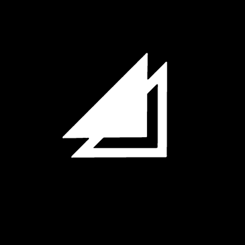
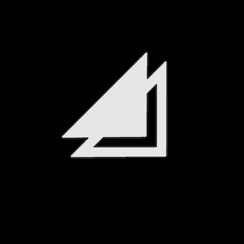
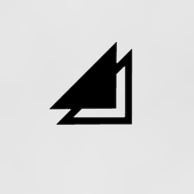

Verify
Chrome or Safari only. Finder, Quick Look and Preview flatten HDR.
Display capability
Flat luminance probes. If these do not outshine the plain white swatch, the display or its settings are the limiting factor, not the files.
#ffffff

1000

4000

10000
Examples · white mark on black

sdr

mark

field + shimmer
Examples · coloured logo
sdr
highlights
base lifted
Same, on a light ground
sdr
highlights
base lifted
If the probes look flat
- Display brightness at 100% leaves no headroom. Try ~70%.
- Low Power Mode caps headroom entirely.
- Backgrounded windows have their headroom reclaimed.
- External monitors other than Pro Display XDR are SDR.